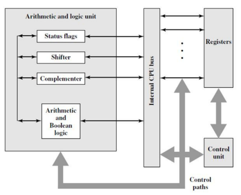
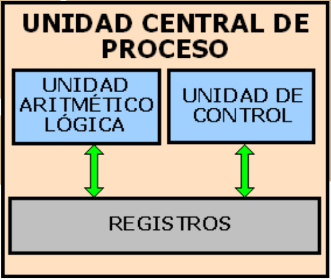
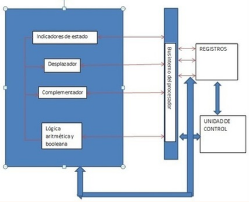
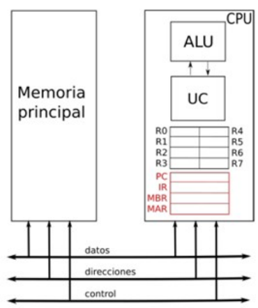
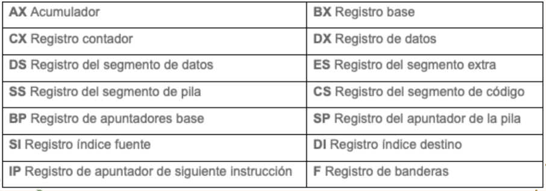
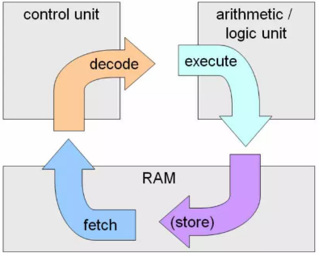
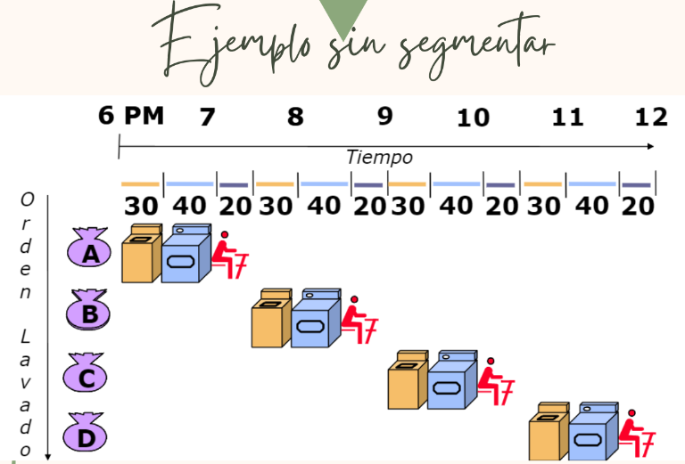
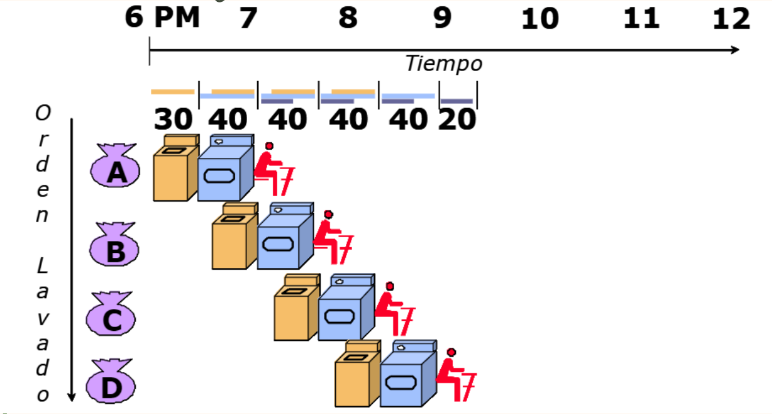
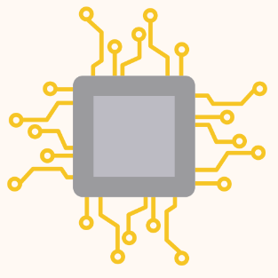

TECNOLOGICO NACIONAL DE MEXICO
INSTITUTO TECNOLOGICO DE SALTILLO
INGENIERIA EN SISTEMAS COMPUTACIONALES
UNIDAD 2
2.1 Organización del procesador
La organización del procesador se refiere a la manera en que los diferentes
componentes y circuitos del procesador están interconectados y coordinados
para llevar a cabo las operaciones y tareas necesarias para procesar datos y
ejecutar instrucciones.
En general, un procesador consta de varias unidades funcionales clave, como la
unidad de control, la unidad aritmético lógica (ALU), la unidad de registros y la
memoria.

2.2 Estructura de registros
Los registros se encuentran
dentro de cada
microprocesador y su
función es almacenar los
valores de datos,
comandos, instrucciones o
estados binarios que
ordenan qué dato debe
procesarse, como la forma
en la que se debe hacer.

2.2.1 Registros visibles para el usuario.
Un registro visible al usuario es aquel que puede ser referenciado
por medio del lenguaje máquina que ejecuta la CPU. Prácticamente,
todos los diseños contemporáneos de CPU están provistos de varios
registros visibles al usuario, en oposición a disponer de un único
acumulador.
Registros de uso general:
Sirven para almacenar direcciones o
datos generales. Se trata de una
especie de registros mixtos que, como
su propio indica, no tienen una función
específica.
Registros de datos: Guardan valores de datos numéricos,
como son los caracteres o pequeñas
órdenes. Los procesadores antiguos
tenían un registro especial de datos: el
acumulador, el cual era usado para
operaciones determinadas.
Registro de direcciones:
Guardan direcciones que son usadas para
acceder a la memoria principal o primaria,
que solemos conocer como ROM o RAM. En
este sentido, podemos ver procesadores con
registros que se utilizan solo para guardar
direcciones o valores numéricos.
Codigos de condicion:
son bits fijados por el hardware de la CPU
como resultado de alguna operación. Por
ejemplo, una operación aritmética puede
producir un resultado positivo, negativo o
nulo. Además de almacenarse el propio
resultado en un registro o en la memoria, se
obtiene también un código de condición.

2.2.2 Registros de control y de Estados
Son utilizados por la unidad de
control para controlar el
funcionamiento del procesador y por programas
privilegiados del sistema
operativo para controlar la
ejecución de programas. Hay diversos registros del procesador que se emplean
para controlar su funcionamiento. La mayoría de ellos,
en la mayor parte de las máquinas no son visibles por el
usuario, pero alguno de ellos puede ser visible por
ciertas instrucciones máquina ejecutadas en un modo
privilegiado o de sistema operativo.
Naturalmente, diferentes máquinas tendrán distinta
organización de registros y usarán distinta
terminología. Son esenciales cuatro registros para la
ejecución de una instrucción:
Contador de
programa (Program
Counter- PC):
Contiene la dirección
de la instrucción a
buscar.
Registro de instrucción (Instruction Register-IR): Contiene la
instrucción buscada
mas recientemente.
Registro de dirección
de memoria
(Memory Address
Register- MAR):
Contiene la dirección
de una posición de
memoria.
Registro amortiguador de
memoria (Memory Buffer
Register- MBR): Contiene el
dato a escribir en una
posición de memoria o el
dato contenido en una
posición de memoria leído
mas recientemente.
Otros tipos de registros:
Registro de direcciones de entrada y salida (I/O AR): especifica al
dispositivo ya sea de entrada o salida
Registro de datos de entrada y salida (I/O BR): es una área temporal
en donde se lleva a cabo el intercambio de datos entre el procesador y
el dispositivo de entrada y salida que esta especificado en IOAR.
Palabras de estado del programa (PSW): contiene códigos de
condición junto con otras informaciones de estado como el signo,
acarro, desbordamiento, entre otras.

2.2.3 Ejemplos de registros de CPU reales
La CPU tiene 14 registros internos,
cada uno de 16 bits. Los primeros
cuatro, AX, BX, CX, y DX son registros
de uso general y también pueden ser
utilizados como registros de 8 bits,
para utilizarlos como tales es
necesario referirse a ellos como por
ejemplo:
AH y AL, que son los bytes alto (high)
y bajo (low) del registro AX. Esta
nomenclatura es aplicable también a
los registros BX, CX y DX
Los
14 registros son conocidos por sus nombres especificos:

2.3 El ciclo de instrucción
Se denomina ciclo de instruccion a la secuencia de acciones
que realiza la CPU para lograr ejecutar una instrucción del
programa almacenado en memoria. Es una especificacion que detalla las
instrucciones que una CPU de un ordenador puede entender y ejecutar,
o el conjunto de todos los comandos implementados por un diseño particular
de una CPU.
CISC: En la arquitectura
computacional, CISC
(complex instruction set
computer) es un modelo
de arquitectura de
computadora.
Los microprocesadores
CISC tienen un conjunto
de instrucciones que se
caracteriza por ser muy
amplio y permitir
operaciones complejas
entre operandos situados
en la memoria o en los
registros internos.
Este tipo de arquitectura dificulta el
paralelismo entre instrucciones, por
lo que, en la actualidad, la mayoría de
los sistemas CISC de alto rendimiento
implementan un sistema que
convierte dichas instrucciones
complejas en varias instrucciones
simples del tipo RISC, llamadas
generalmente microinstrucciones.
RISC:En la arquitectura
computacional, RISC
(del inglés reduced
instruction set
computer) es un tipo
de microprocesador
con las siguientes
características
fundamentales:
-Instrucciones de tamaño fijo y
presentadas en un reducido
número de formatos.
-Sólo las instrucciones de carga
y almacenamiento acceden a la
memoria de datos.
SISC: es un tipo de arquitectura de
microprocesadores orientada al
procesamiento de tareas en
paralelo.
Esto se implementa mediante el
uso de la tecnología VLSI, que
permite a múltiples dispositivos
de bajo costo que se utilicen
conjuntamente para resolver un
problema particular dividido en
partes disjuntas.
La arquitectura RISC es un
subconjunto del SISC,
centrada en la velocidad de
procesamiento debido a un
conjunto de instrucciones
reducido.
2.3.1 Ciclo de Fetch-Decode-Execute
Los procesadores funcionan en tres
etapas distintas en su versión más
simple, estas fases o sub ciclos tienen
etapas o actividades en las que se
dividen.
En donde se realiza un proceso
continuo de 3 etapas que son:
Fetch: La primera etapa del ciclo de instrucción se encarga de captar las instrucciones que hay
en la memoria RAM asignada al procesador a través de una serie de unidades y registros
que son las siguientes:
1.Contador de Programa:
Apunta a la siguiente
instrucción del procesador.
Incrementa en 1 su valor cada
que termina un ciclo de
instrucción o cuando una
instrucción cambia el valor.
2. Registro de
direccionamiento de
memoria:
El MAR copia el contenido del
PC y lo envía a la RAM .
3. Registro de datos a memoria:
lo que hace el MDR es copiar el
contenido de esa dirección de
memoria a un registro interno de la
CPU, el cual es un registro temporal
de paso antes de que su contenido
sea copiado al Instruction Register.
4. Registro de Instrucción: La parte final de la etapa de captación
o fetch es la escritura de la instrucción en el registro de
instrucción, del cual la unidad de control del procesador copiará
su contenido para la segunda etapa del ciclo de instrucción.
Decode:
Hay diferentes tipos de instrucciones y no
todas hacen lo mismo, por lo que
dependiendo del tipo de instrucción
necesitamos saber hacía que unidades de
ejecución se van a enviar y la manera más
clásica de hacerlo es a través de lo que
llamamos un descodificador, el cual toma
cada instrucción, la divide internamente
según el opcode o instrucción y el dato o la
dirección de memoria donde se encuentra
este.
Execute:
La última etapa es la de la
ejecución de las instrucciones,
en esta étapa las instrucciones
son resueltas, pero no todos los
tipos de instrucción se resuelven
de la misma forma, ya que la
forma de utilizar el hardware
dependerá de la función de cada
una de ellas, en general tenemos
cuatro tipos de instrucciones:
-Instrucciones de movimiento de bits: En el cual se
manipula el orden de los bits que contienen el dato.
-Instrucciones aritméticas: Donde se realizan
operaciones matemáticas y también lógicas, estas
se solucionan en las llamadas ALU o unidades
aritmético-logicas
-Instrucciones de salto: En la que se cambia la
siguiente el valor del contador de programa, lo que
permite utilizar el código de manera recursiva.
-Instrucciones a memoria: Son con las que el
procesador lee y escribe la información de la
memoria del sistema.
Una vez la instrucción ha sido terminada se escribe el
resultado sobre una dirección de memoria en concreto
y se pasa a ejecutar la siguiente

2.3.2 Segmentación de Instrucciones
La segmentación de las
instrucciones (pipeline) consiste
en dividir el ciclo de ejecución
de las instrucciones en un
conjunto de etapas. Estas
etapas pueden coincidir o no
con las fases del ciclo de
ejecución de las instrucciones.
El objetivo de la segmentación es
ejecutar simultáneamente
diferentes etapas de distintas
instrucciones, lo cual permite
aumentar el rendimiento del
procesador sin tener que hacer
más rápidas todas las unidades
del procesador (ALU, UC, buses,
etc.) y sin tener que duplicarlas.
 
2.3.3 Conjunto de instrucciones
El conjunto de instrucciones de una computadora es esencial para su
funcionamiento ya que las instrucciones se comunican directamente con
el procesador. Dependiendo del tipo de conjunto de instrucciones que un
CPU entienda, se puede determinar qué tipo de programas puede o no
soportar una computadora. Las diferencias en los conjuntos de
instrucciones son a menudo la razón por la cual no se pueden utilizar las
mismas aplicaciones en diferentes dispositivos. A pesar de estas
diferencias, , los conjuntos de instrucciones tienen ciertas características
comunes que son necesarias para su funcionamiento.
La ortogonalidad es una
característica de las
instrucciones en un set
de instrucciones de un
CPU. Se dice que un set
de instrucciones es
ortogonal cuando las
instrucciones pueden ser
fuente y destino de
cualquier elemento de la
arquitectura del CPU.
Cisc utiliza un número reducido de
instrucciones y pipelining para
aumentar la velocidad de ejecución.
También utiliza instrucciones
ortogonales, lo que permite la
dirección de cualquier tipo de
operando de varias formas. Cisc solo
permite la realización de
operaciones en registros, no en
memoria, y ofrece una gran cantidad
de registros para trabajar.
El set de instrucciones Risc tiene una
cantidad de instrucciones considerable,
pero no utiliza segmentación o
pipelining. Sus instrucciones no son
ortogonales y se debe especificar
cuidadosamente qué registros se
utilizan. Permite trabajar en memoria y
tiene menos registros debido al espacio
disponible en memoria. Programar en
Risc es más fácil ya que se puede
utilizar el lenguaje C y cada instrucción
puede realizar tareas más complejas.
2.3.4 Modos de Direccionamiento
Son las diversas formas con las que se puede indicar a un
procesador dónde encontrar o depositar un dato, en una
instrucción. Este identifica los operandos de la operación a
realizar, fuente y destino, de los datos sobre los que se operará.
Se pueden especificar por: un registro de la CPU, una localidad
de memoria, un puerto de Entrada/Salida o un dato inmediato.
Existen dos grupos: modos de Registro o modos de Memoria. La
dirección física de memoria o registro donde se encuentra
realmente el operando se llama Dirección Efectiva, y se
representa ea.
Según el modo de direccionamiento
utilizado, la CPU tendrá que realizar
unos cálculos distintos hasta
obtener el valor de dicha dirección
efectiva. Las instrucciones pueden
contener hasta dos operandos que
se denominan Operando Fuente, el
del lado derecho, y Operando
Destino, el del lado izquierdo. En
estos casos, cada operando tendrá
su propio modo de
direccionamiento.
Tipos:
Inmediato:
Transfiere un byte o palabra de datos
inmediato hacia el operando destino.
Este modo es usado para inicializar
registros o localidades de memoria y
para operar sobre ellos con valores
constantes de datos.
Este modo no opera con registros de
segmento, por lo que no se puede
cargar un registro de segmento de
manera inmediata.
Por Registro:
Transfiere un byte o palabra
desde un registro fuente hasta
un registro destino.
Los dos operandos no pueden
ser registros de segmento.
El registro de segmento de
código (CS) nunca puede
utilizarse como destino.
No se permite el acceso entre
registros de segmento ni de
distintos tamaños.
Directo:
Transfiere un byte o palabra,
contenido en una localidad de
memoria en el segmento DS, a un
registro de 8 o 16 bits. La localidad
de memoria puede ser el operando
fuente o destino.
La dirección de memoria se
proporciona directamente como
parte de la instrucción (Puede ser a
través de etiquetas, en las cuales el
programador no necesita conocer la
dirección numérica).
Indirecto:
El modo de direccionamiento directo
se usa para acceder localidades de
memoria de manera no frecuente.
Sin embargo cuando una localidad
de memoria debe ser leída o escrita
varias veces dentro de un programa,
la búsqueda repetida de la dirección
lógica hace este modo ineficiente. El
modo de direccionamiento indirecto
resuelve este problema
almacenando esta dirección de
memoria en un registro base (BX,
BP)o un registro índice (SI o DI).
2.4 Casos de Estudio de CPU reales
Intel 8086:
Es un procesador que utiliza modos de direccionamiento irregulares, que se dividen en
indirectos por registro, indexados y directos por registro.
Registros propósito local:Se utilizan para almacenar los
datos con los que se está
trabajando
-Registro Acumulador (AX)
-El Registro Base (BX)
-El Registro Contador (CX)
-El Registro De Datos (DX)
Registros indice: Son requeridos por
algunas operaciones con
cadenas de caracteres
-Fuente (SI)
-Destino (DI)
Registros apuntadores: Se utilizan para la
referencia de parámetros
dentro de la pila.
-Registro (SP)
-Registro (BP)
Motorola 68000:
Utiliza un sistema de direccionamiento basado en dos bancos de ocho
registros de 32 bits. Un banco es de datos (Dn) y el otro de punteros
(An), y contiene un contador de programa de 32 bits y un registro de
estado de 16 bits. Los registros de datos (D0 a D7) se pueden utilizar
como registros de 32 bits (.l), 16 bits (.w) y 8 bits (.b) y pueden ser
utilizados como acumulador, índice o puntero. El procesador acepta
modos de direccionamiento como implícito, inmediato, absoluto,
directo a registro, indirecto, relativo a PC con desplazamiento y
relativo a PC con índice y desplazamiento.
Intel 80386:
Se compone de una unidad de ejecución y una unidad
de instrucciones. La unidad de ejecución tiene ocho
registros de 32 bits para el cálculo de direcciones y
operaciones con datos, y un barrel shifter de 64 bits
para acelerar ciertas operaciones. Este procesador
utiliza varios modos de direccionamiento, incluyendo
uno nuevo que requiere un byte adicional llamado SIB.
También tiene varios registros de propósito general,
segmento, puntero de instrucciones, indicadores,
control, direcciones de sistema, depuración y test.
